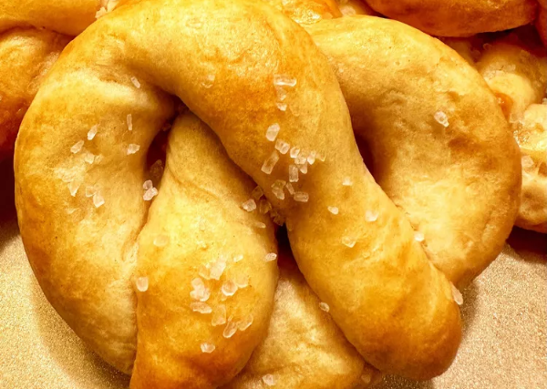

Homemade Pretzels
Ingredients
-
1 (8 ounce) package refrigerated crescent
roll dough (such as Pillsbury™)
-
8 cups water
-
3 tablespoons baking soda
-
1 small egg
-
1 tablespoon of water
-
1 tablespoon of butter, melted
-
14 tablespoon of coarse salt
Directions
-
Preheat the oven to 400 degrees F (200 degrees C). Line a baking sheet with
parchment paper and set aside.
-
Combine 8 cups water and baking soda in a large pot and bring to a rolling boil
over high heat. Once boiling, reduce heat and keep water at a simmer.
-
Start at the large end and roll each crescent roll triangle into a large rope, about
12 inches long. Form rope into the shape of a pretzel.
-
Using a spider strainer, lower 1 pretzel at a time into the simmering water for 7
to 8 seconds. Place pretzels on parchment lined baking sheet. Combine egg and
1 tablespoon water in a small bowl. Brush each pretzel with egg mixture.
-
Bake in the preheated oven until golden brown, 12 to 14 minutes.
-
Remove from oven. Brush each pretzel with melted butter and sprinkle with
coarse salt while still hot.
Hope it's to your liking
